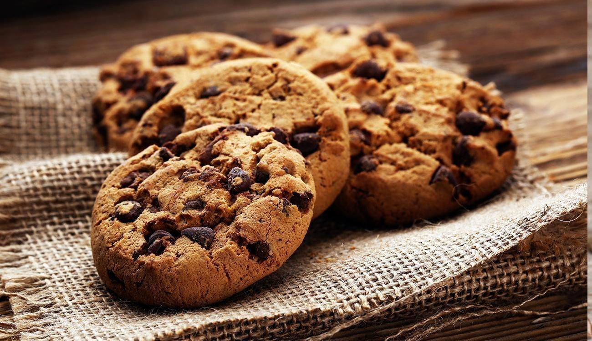

Cookies com gotas de chocolate
Uma receita simples e perfeita para transformar o seu lanche da tarde em um momento especial.
Tempo de preparo
- Total 30 minutos
- Preparação: 10 minutos
- Forno 20 minutos
Ingredientes
- 110g de açúcar branco
- 140g de manteiga sem sal
- 180g de chocolate meio amargo
- 1 pitada de sal
- 1 ovo
- 250g de trigo
- 4g de bicarbonato de sódio
- 140g de açúcar mascavo
- 5g de fermento para bolo
Instruções:
- Em um recipiente adicione a manteiga em temperatura ambiente,açúcar mascavo e açúcar branco,logo em seguida misture até obter um creme.Se desejar utilizar a batedeira.
- Com o creme em mãos adicione o ovo,misture bem.
- Logo depois acrescente o trigo,fermento e uma pitada de sal.Mexa um pouco até que os igredientes incorporem.
- Por último adicione o chocolate,lembre-se de reservar um pouco para decorar.
- Mexa uma última vez até que o chocolate seja envolvido pela massa.
- De forma aos biscoitos, coloque-os em uma forma untada, com os biscoitos já dentro da forma lembre-se de acrescentar os pedaços de chocolate que foram reservados anteriormente para decorar.
- Leve à geladeira até a massa ficar mais sólida, em seguida coloque para assar em forno preaquecido a 180° por 20 minutos.
- Passado o tempo, deixe esfriar e sirva.
Nutrientes:
A tabela abaixo mostra o valor nutricional do cookie com gotas de chocolate:
| Calorias | 150-200 kcal |
|---|---|
| Gorduras totais | 7-10g |
| Gorduras Saturadas | 4-6g |
| Colesterol | 20-30mg |
| Sódio | 100-150mg |
| Carboidratos Totais | 20-25g |
| Fibras | 1-2g |
| Açúcares | 12-15g |
| Proteínas | 1-2g |